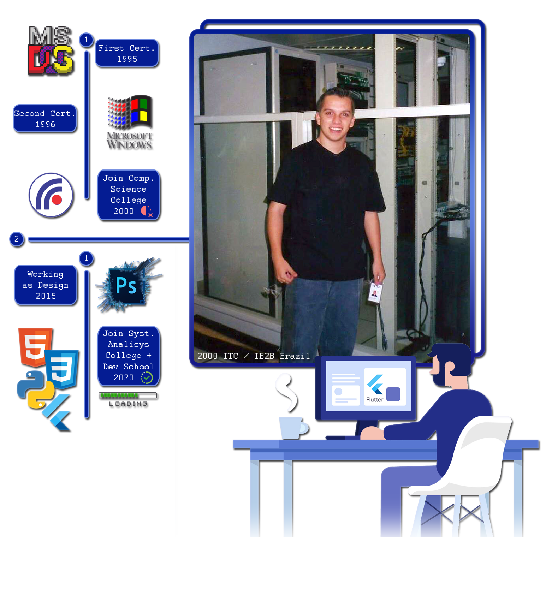

IT, Systems Analysis & HealthTech

My passion for computing ignited with an early 486 machine, sparking a lifelong exploration of digital architecture and systems. In the 2000s, I worked in helpdesk support and infrastructure management, maintaining server environments, resolving critical tickets, and mastering structured teamwork.
In 2015, I advanced my digital journey through graphic and brand design, engineering visual identities, logos, and promotional typography.
Since 2023, I have fully consolidated my software engineering career: graduating as a Technologist in Systems Analysis and Development (ADS) and expanding modern full-stack capabilities at Alura Dev School. Specializing in modern JavaScript, HTML5/CSS3, responsive frontends, and MySQL/PostgreSQL databases, I architect and build dedicated digital health applications at LuxSolutions.tech.
Combining deep clinical workflows with modern digital engineering allows me to build applications that genuinely understand the day-to-day challenges of frontline healthcare teams, communication handovers, and patient data reliability.